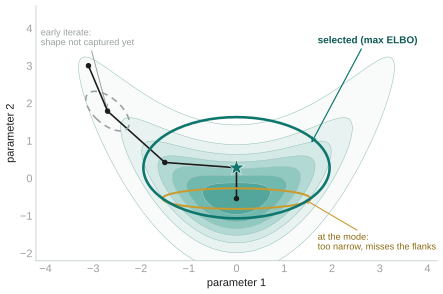
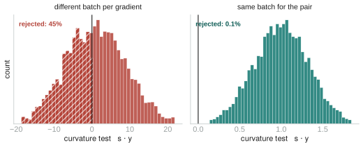

Update, August 11: the ELBO iterate selection described below was later replaced by Polyak–Ruppert tail averaging — each accepted iterate turns out to sit near its own minibatch's MAP, a location error that no selection rule can remove. Pareto-k went from ≈6 to 0.3–0.6. Details in pymc-extras#722. The note below stands as written.
Week 6 mentioned a streaming Pathfinder in a single line, right next to the convergence monitor. This is the other half of that sentence. Streaming ADVI, the subject of the last few weeks, is the grind-it-out method: thousands of small gradient steps. Pathfinder is the fast one. Getting it to run on data that never lands in memory came down to one subtle fact about how L-BFGS learns curvature, so that is most of what this note is about.
What Pathfinder buys you
Pathfinder [1] does not optimize a variational family for thousands of steps. It runs a single L-BFGS trajectory from a starting point toward the posterior mode. At each iterate along that path, L-BFGS is already carrying an estimate of the inverse Hessian, and Pathfinder reads a local Gaussian straight off it. It scores each of those Gaussians by ELBO, keeps the best one, and corrects it with Pareto-smoothed importance sampling. Tens of iterations instead of thousands of steps, no learning rate to tune, no step count to guess, and a covariance that carries correlations already, because it is built from curvature rather than a diagonal mean-field assumption.

Why it does not survive a minibatch
L-BFGS never forms a Hessian. It keeps the last few curvature pairs,
s = x' − x and y = ∇f(x') − ∇f(x), and
the secant relation y ≈ H·s is what lets those pairs stand in
for the curvature. The catch is that y has to be a difference of two
gradients of the same function. On a stream, every step sees a different random
minibatch. Pair a gradient measured on batch A with one measured on batch B and the
difference is dominated by the switch of batch, not by the change in curvature. The pair
is noise wearing a curvature costume. The usual health check, s·y > 0,
then fails almost half the time, and an inverse-Hessian estimate built from those pairs is
meaningless.

s·y > 0 test. Right: both gradients of a pair on
the same batch. The batch noise cancels in the subtraction and rejections fall to about
0.1%.
The fix is one line of discipline
Measure both gradients of a pair on the same batch [2]. Hold the minibatch fixed for the whole step: compute the gradient, take the L-BFGS step, compute the gradient again on that same batch, and only then form the pair and advance to the next batch. The batch-specific noise is present in both gradients, so it cancels in the subtraction, and what is left is real curvature. In my runs the rejection rate drops from the 45% on the left of the figure to about 0.1% on the right. Holding the batch fixed inside a step has a second benefit: the line search now sees a deterministic objective, so a plain backtracking Armijo search does the job, with none of the Wolfe machinery that a stochastic objective would break.
Being honest about the whole dataset
Choosing which iterate is best only needs a relative comparison, so a fixed evaluation
subset is fine there. The final density and its importance weights are a different matter.
They have to be the true full-data log density, not a subset scaled up. The scaled subset
is unbiased on average, but at any single point it is an estimate with variance, not the
density at that point. On one model I measured −797 for the full data
against −888 for the scaled subset at the same parameter value, and a
gap that size aims PSIS at the wrong target. Computing the full density does not need the
data in memory, only a single pass: the prior once, then each batch's likelihood added
back at its true weight. That matches model.logp to 1e-6.
One honest wrinkle
While reading my own code I found something that looked wrong. The curvature pairs live in
a ring buffer, and once it wraps, the physical column order stops matching the order the
pairs were added, while the compact inverse-Hessian form reads those columns by position.
That should scramble the covariance. Then I opened the Pathfinder code in
pymc-extras and it does exactly the same thing. So this is not something my
streaming version introduced. It may be a latent issue upstream instead, and I have
written it up with a deterministic reproduction to raise with my mentors rather than
quietly working around it. The lesson from last week holds: when something looks alarming,
check it against upstream before you panic.
Where it plugs in
None of this is a new inference stack. The streaming Pathfinder feeds on the same
DataLoader, the same pm.Data placeholder, and the same
total_size scaling that streaming ADVI uses. Only the optimizer changes.
Everything after it, the Gaussian sampling and the PSIS correction, is upstream's code
reused unchanged. Swapping ADVI for Pathfinder is a different call on the same data
contract:
from pymc_streaming_lab import fit_streaming_pathfinder
# same loader, same model, same pm.Data("batch") + total_size=len(loader)
res = fit_streaming_pathfinder(model, loader, num_iters=300, num_draws=2000)
res.samples # posterior draws, correlations included
res.violation_rate # fraction of rejected curvature pairs; ~0 with same-batch pairing
res.pareto_k # PSIS diagnostic; small means the Gaussian was trustworthyThat covers both of PyMC's variational entry points on data that does not fit in memory: the iterative one from the last few weeks, and now the fast one.
References
- [1] Zhang, L., Carpenter, B., Gelman, A., & Vehtari, A. (2022). Pathfinder: parallel quasi-Newton variational inference. Journal of Machine Learning Research, 23(306), 1–49.
- [2] Schraudolph, N. N., Yu, J., & Günter, S. (2007). A stochastic quasi-Newton method for online convex optimization. AISTATS, 436–443.
- [3] Byrd, R. H., Nocedal, J., & Schnabel, R. B. (1994). Representations of quasi-Newton matrices and their use in limited memory methods. Mathematical Programming, 63, 129–156.
- [4] Vehtari, A., Simpson, D., Gelman, A., Yao, Y., & Gabry, J. (2024). Pareto smoothed importance sampling. Journal of Machine Learning Research, 25(72), 1–58.
Links. DataLoader in extras #698 · Trainer #710 · GSoC project page · Mentors @zaxtax · @fonnesbeck